novorossiysk-2025-06
UTC: 2025-06-03T08:27:46.521000Z · SCL water: 98.7% · cloud/shadow: 1.3%
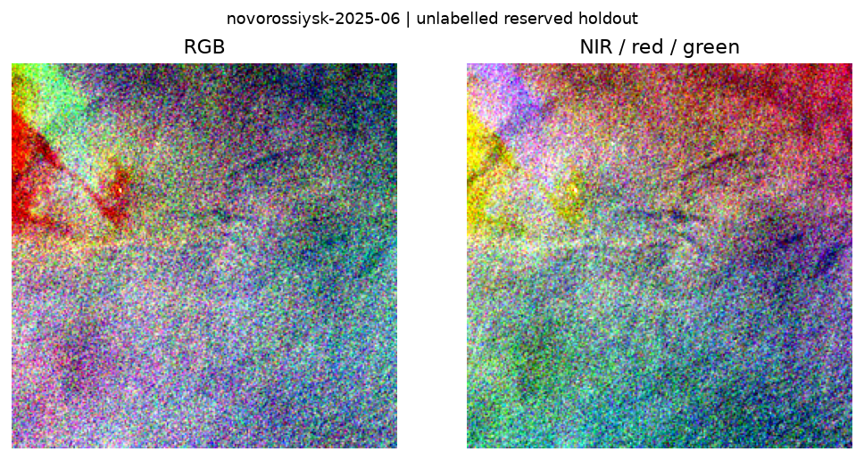
S2B_T37TCK_20250603T082548_L2A
Все пиксели пока неизвестны. Модельные предсказания не вычислялись. Инструкция разметчикам. RGB и NIR/red/green растянуты отдельно по 2–98 процентилям; цвет не является меткой пластика.
UTC: 2025-06-03T08:27:46.521000Z · SCL water: 98.7% · cloud/shadow: 1.3%

S2B_T37TCK_20250603T082548_L2A
UTC: 2025-09-01T08:27:42.898000Z · SCL water: 100.0% · cloud/shadow: 0.0%
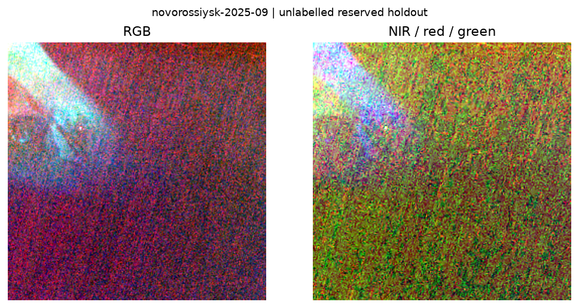
S2B_T37TDK_20250901T082111_L2A
UTC: 2025-06-07T08:18:12.747000Z · SCL water: 100.0% · cloud/shadow: 0.0%
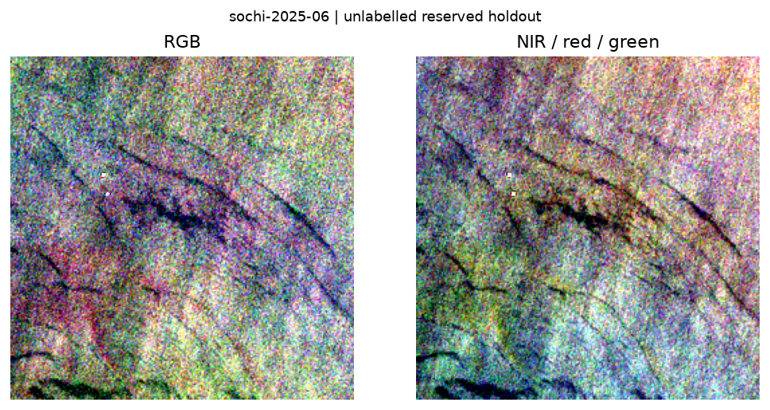
S2A_T37TEJ_20250607T081637_L2A
UTC: 2025-09-01T08:27:53.492000Z · SCL water: 100.0% · cloud/shadow: 0.0%
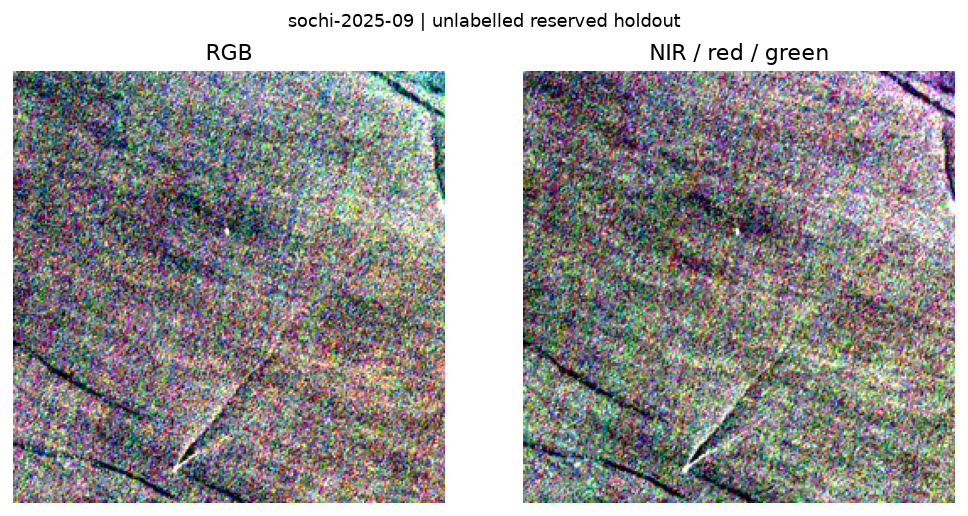
S2B_T37TEJ_20250901T082111_L2A
UTC: 2025-06-07T08:18:34.628000Z · SCL water: 100.0% · cloud/shadow: 0.0%
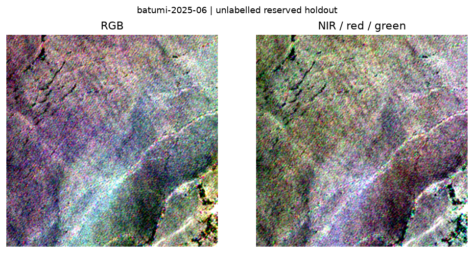
S2A_T38TKM_20250607T081637_L2A
UTC: 2025-09-15T08:08:20.491000Z · SCL water: 100.0% · cloud/shadow: 0.0%
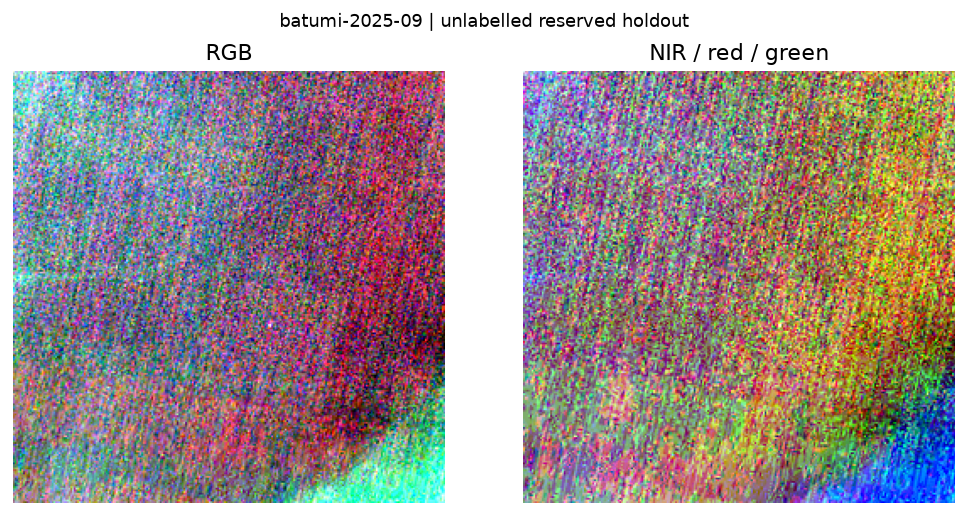
S2B_T37TGG_20250915T080243_L2A
UTC: 2025-06-03T08:38:50.352000Z · SCL water: 97.6% · cloud/shadow: 2.4%
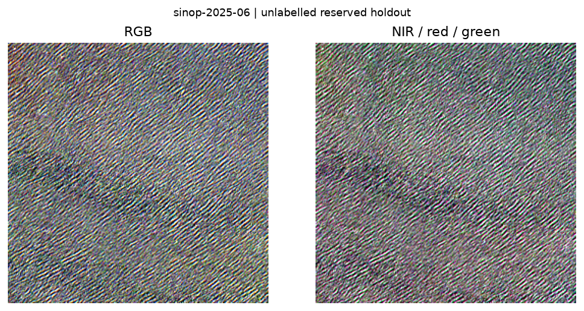
S2A_T36TXM_20250603T083630_L2A
UTC: 2025-09-01T08:38:47.747000Z · SCL water: 100.0% · cloud/shadow: 0.0%
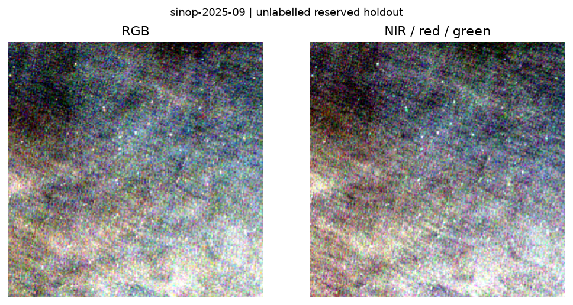
S2A_T36TXM_20250901T083630_L2A
UTC: 2025-06-03T09:18:47.140000Z · SCL water: 92.2% · cloud/shadow: 0.0%
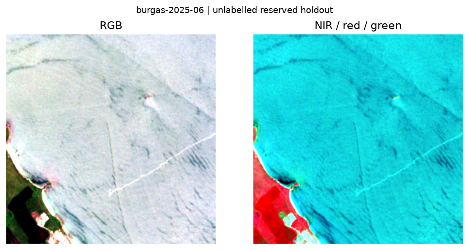
S2C_T35TNH_20250603T091110_L2A
UTC: 2025-09-01T09:18:44.852000Z · SCL water: 92.2% · cloud/shadow: 0.0%
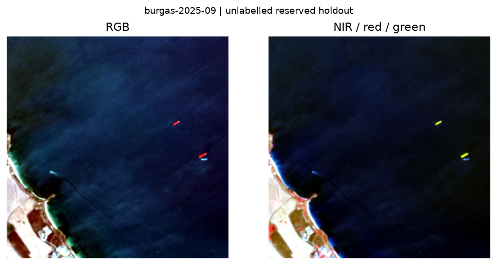
S2C_T35TNH_20250901T091155_L2A
UTC: 2025-06-02T09:08:29.548000Z · SCL water: 95.3% · cloud/shadow: 0.1%
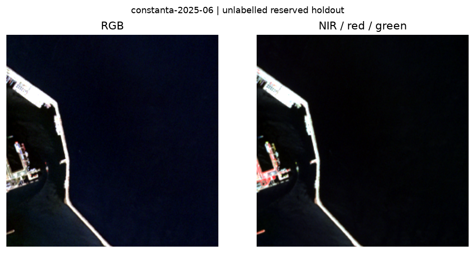
S2A_T35TPJ_20250602T090658_L2A
UTC: 2025-09-03T09:08:12.092000Z · SCL water: 95.3% · cloud/shadow: 0.2%
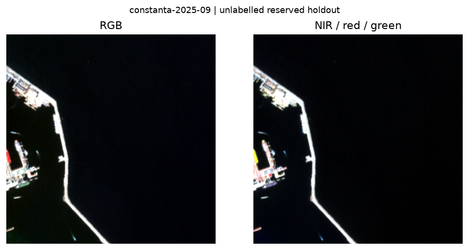
S2B_T35TPJ_20250903T090123_L2A